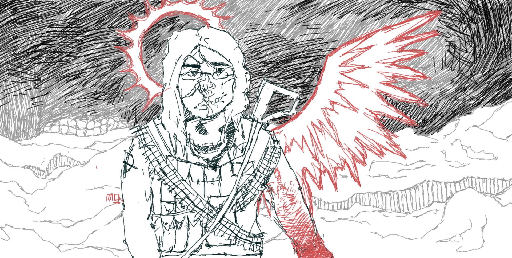
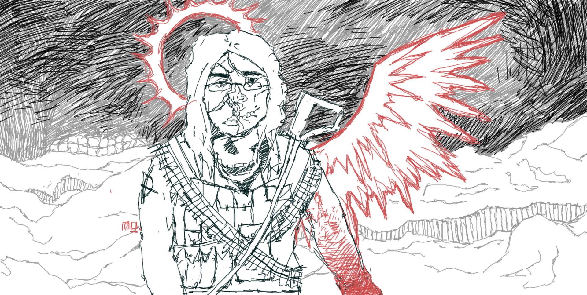

Last updated: 27.02.2026
Ostatnia aktualizacja: 27.02.2026
If you ever see someone outside of this site claiming to be me, report them, for I have no social media whatsoever.
Jeśli kiedykolwiek zobaczysz kogoś spoza tej witryny, kto podaje się za mnie, zgłoś go, gdyż nie mam żadnego konta w mediach społecznościowych.
Im a Poland-based romantic artist creating drawings, paintings, both traditional and digitial, worldbuilding and writing poetry in my mother tongue.
Jestem artystą romantycznym z Polski. Tworzę rysunki, obrazy, zarówno tradycyjne jak i cyfrowe, światotworzę i piszę poezję w moim ojczystym języku.
 

Opętany.
Ja jestem opętany
pojmany przez wieczne rany i skazany na amen.
Moja ręka nie jest znakiem,
jest działem.
Pod nieziemnym działaniem,
rozpruwa papier
pomiędzy snem a światem czego jestem świadkiem (...)
Od zawsze.
Porywcze prądy prowadzą sądy w moim imieniu
kiedy duch tchnienia zasiada na moim ramieniu.
Czy ja opętany czy wybrany
już nie wiem.
Jestem dziełem, objawieniem.
I uzbrojeniem frontu ducha swego,
nadanego przez Boga jedynego
w ciele i krwi objawionego
od Maryjnego, niepokalanego serca
które jest jak twierdza.
Ku bramom każdego świętego miejsca
jak Polska ojczysta
ziemia jej żyzna
jak Rzeczpospolita
w historii się czyta
tak Pani jej czyta się w księdze
świętej i niepojętej
na zawsze zmieniającej serce.
I moje polskie ręce
wypełnia
jak krew w nich płynie
tchnie je do tańca nad papieru ryzę,
gdzie nic poza ideą nie widzę.
I śmieję się, szydzę
i płacze, raduje
tak wiele czuję i reprezentuję,
na ideach życie buduję.
Znajduję coraz to dalsze miejsca w mojej głowie,
coraz to bardziej swą duszę czuję.
Tak natchniony, że nieposkromiony,
od ziemi oderwany,
niczym opętany.
Opętany!
Blady w zapłonie
przeżywa boje
które przeminęły lub jeszcze nie nadeszły,
a ja stawiam tam podeszwy!
Boże!
Ty mnie utrzymaj w pokorze!
Bo kto jak nie Ty to zrobić może?
Rzuć mnie w morze
jeśli trzeba
będę jak ryba
której żadna fala nie porywa.
Daj mi strzelbę
a zawalczę!
W Twojej prawdzie
odziewawczem!
Lub skaż na mnie karę,
a z pokorą umrę.
Cokolwiek rozkaż a ja to zrobię
dedykując Polsce i Tobie!
I każdemu młodemu poecie,
który się rzuca po tym świecie!
I jak ja nie wie jaki rok jest,
tylko wie co czuje,
co go prześladuje i nakazuje,
zsyłać tuszem
świadectwo jak to jest mieć duszę.
Bo nawet opętanie,
to dowód na ducha posiadanie,
młodego i porywczego.
Wielkiego bowiem silnego.
Adam Mickiewicz - Dziady
Adam Mickiewicz - Ballady i romanse
Erich Maria Remarque - All Quiet on the Western Front
Johann Wolfgang von Goethe - Cierpienia młodego Wertera
Cyprian Norwid - Poezye
Franz Kafka - The Trial
Fiodor Dostojewski - Zbrodnia i kara